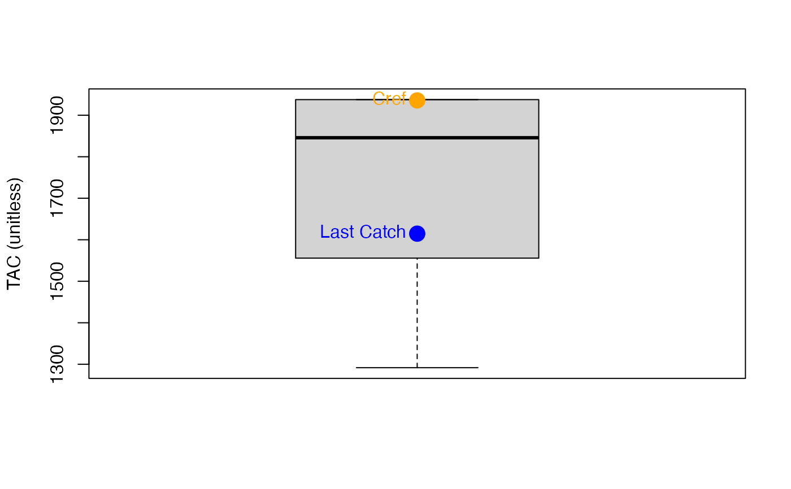

GB_CC.RdA simple MP that aims for a reference catch (as a proxy for MSY) subject to imperfect information.
GB_CC(x, Data, reps = 100, plot = FALSE)
| x | A position in the data object |
|---|---|
| Data | A data object |
| reps | The number of stochastic samples of the MP recommendation(s) |
| plot | Logical. Show the plot? |
An object of class Rec-class with the TAC slot populated with a numeric vector of length reps
Note that this is my interpretation of their MP and is now stochastic. Currently it is generalized and is not 'tuned' to more detailed assessment data which might explain why in some cases it leads to stock declines.
The TAC is calculated as:
$$\textrm{TAC} = C_\textrm{ref}$$
where \(C_\textrm{ref}\) is a reference catch assumed to be a proxy for MSY.
In the MSE \(C_\textrm{ref}\) is the calculated MSY subject to observation error
defined in Obs@CV_Cref.
The TAC is subject to the following conditions:
if next TAC > 1.2 last catch, then TAC = 1.2 last catch
if next TAC < 0.8 last catch, then TAC = 0.8 last catch
See Data-class for information on the Data object
GB_CC: Cref
See Online Documentation for correctly rendered equations
Geromont, H.F. and Butterworth, D.S. 2014. Complex assessment or simple management procedures for efficient fisheries management: a comparative study. ICES J. Mar. Sci. doi:10.1093/icesjms/fsu017
Other Constant Catch MPs:
CC1()
T. Carruthers
#> TAC (median) #> 1624.612